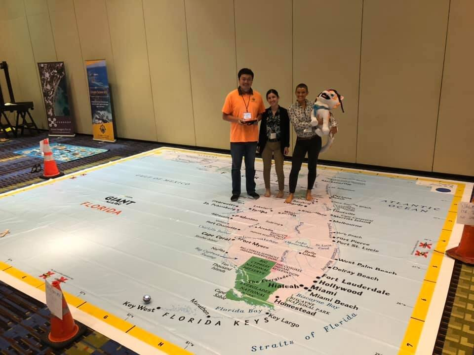

The Golden Rule, DroneCat And GeoBus At Central Florida GIS Workshop

This week, Dr. Hawthorne and our Citizen Science GIS team brought The Golden Rule, Dronecat and GeoBus to Central Florida GIS Workshop. Dr. Hawthorne was invited as a keynote speaker to present our 40 foot city bus with a mobile citizen science laboratory focused on maps, apps, and drones that visits all K-12 schools in Florida. The presentation was well-attended with over 200 industry leaders from around the region.
Bo, Kirsten and Morgan with Citizen science GIS led the exhibit hall sharing of our Augmented Reality sandbox, giant map of Florida. They also shared the good geo-vibes. Kirsten and Morgan were co-awarded a $500 prize for 2nd place in the student presentation competition at this week’s Central Florida GIS Workshop.

See the below video for Dronecat hanging out at Daytona Beach. Stay tuned for more from your pals at Citizen Science GIS! follow us on Facebook, Twitter, Instagram, LinkedIn